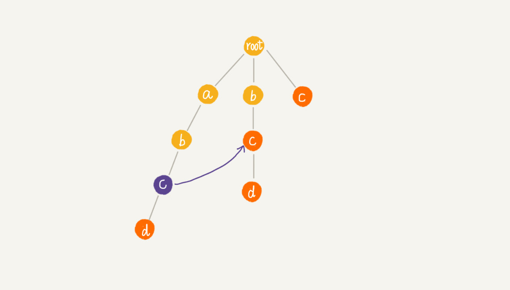
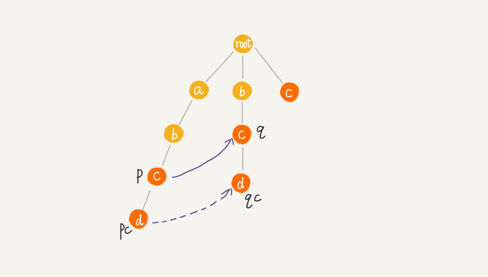

36 | AC自动机：如何用多模式串匹配实现敏感词过滤功能？
很多支持用户发表文本内容的网站，比如 BBS，大都会有敏感词过滤功能，用来过滤掉用户输入的一些淫秽、反动、谩骂等内容。你有没有想过，这个功能是怎么实现的呢？
实际上，这些功能最基本的原理就是字符串匹配算法，也就是通过维护一个敏感词的字典，当用户输入一段文字内容之后，通过字符串匹配算法，来查找用户输入的这段文字，是否包含敏感词。如果有，就用“*”把它替代掉。
我们前面讲过好几种字符串匹配算法了，它们都可以处理这个问题。但是，对于访问量巨大的网站来说，比如淘宝，用户每天的评论数有几亿、甚至几十亿。这时候，我们对敏感词过滤系统的性能要求就要很高。毕竟，我们也不想，用户输入内容之后，要等几秒才能发送出去吧？我们也不想，为了这个功能耗费过多的机器吧？那如何才能实现一个高性能的敏感词过滤系统呢？这就要用到今天的多模式串匹配算法。
基于单模式串和 Trie 树实现的敏感词过滤
我们前面几节讲了好几种字符串匹配算法，有 BF 算法、RK 算法、BM 算法、KMP 算法，还有 Trie 树。前面四种算法都是单模式串匹配算法，只有 Trie 树是多模式串匹配算法。
我说过，单模式串匹配算法，是在一个模式串和一个主串之间进行匹配，也就是说，在一个主串中查找一个模式串。多模式串匹配算法，就是在多个模式串和一个主串之间做匹配，也就是说，在一个主串中查找多个模式串。
尽管，单模式串匹配算法也能完成多模式串的匹配工作。例如开篇的思考题，我们可以针对每个敏感词，通过单模式串匹配算法（比如 KMP 算法）与用户输入的文字内容进行匹配。但是，这样做的话，每个匹配过程都需要扫描一遍用户输入的内容。整个过程下来就要扫描很多遍用户输入的内容。如果敏感词很多，比如几千个，并且用户输入的内容很长，假如有上千个字符，那我们就需要扫描几千遍这样的输入内容。很显然，这种处理思路比较低效。
与单模式匹配算法相比，多模式匹配算法在这个问题的处理上就很高效了。它只需要扫描一遍主串，就能在主串中一次性查找多个模式串是否存在，从而大大提高匹配效率。我们知道，Trie 树就是一种多模式串匹配算法。那如何用 Trie 树实现敏感词过滤功能呢？
我们可以对敏感词字典进行预处理，构建成 Trie 树结构。这个预处理的操作只需要做一次，如果敏感词字典动态更新了，比如删除、添加了一个敏感词，那我们只需要动态更新一下 Trie 树就可以了。
当用户输入一个文本内容后，我们把用户输入的内容作为主串，从第一个字符（假设是字符 C）开始，在 Trie 树中匹配。当匹配到 Trie 树的叶子节点，或者中途遇到不匹配字符的时候，我们将主串的开始匹配位置后移一位，也就是从字符 C 的下一个字符开始，重新在 Trie 树中匹配。
基于 Trie 树的这种处理方法，有点类似单模式串匹配的 BF 算法。我们知道，单模式串匹配算法中，KMP 算法对 BF 算法进行改进，引入了 next 数组，让匹配失败时，尽可能将模式串往后多滑动几位。借鉴单模式串的优化改进方法，能否对多模式串 Trie 树进行改进，进一步提高 Trie 树的效率呢？这就要用到 AC 自动机算法了。
经典的多模式串匹配算法：AC 自动机
AC 自动机算法，全称是 Aho-Corasick 算法。其实，Trie 树跟 AC 自动机之间的关系，就像单串匹配中朴素的串匹配算法，跟 KMP 算法之间的关系一样，只不过前者针对的是多模式串而已。所以，AC 自动机实际上就是在 Trie 树之上，加了类似 KMP 的 next 数组，只不过此处的 next 数组是构建在树上罢了。如果代码表示，就是下面这个样子：
public class AcNode {
public char data;
public AcNode[] children = new AcNode[26]; // 字符集只包含 a~z 这 26 个字符
public boolean isEndingChar = false; // 结尾字符为 true
public int length = -1; // 当 isEndingChar=true 时，记录模式串长度
public AcNode fail; // 失败指针
public AcNode(char data) {
this.data = data;
}
}
所以，AC 自动机的构建，包含两个操作：
- 将多个模式串构建成 Trie 树；
- 在 Trie 树上构建失败指针（相当于 KMP 中的失效函数 next 数组）。
关于如何构建 Trie 树，我们上一节已经讲过了。所以，这里我们就重点看下，构建好 Trie 树之后，如何在它之上构建失败指针？
我用一个例子给你讲解。这里有 4 个模式串，分别是 c，bc，bcd，abcd；主串是 abcd。

Trie 树中的每一个节点都有一个失败指针，它的作用和构建过程，跟 KMP 算法中的 next 数组极其相似。所以要想看懂这节内容，你要先理解 KMP 算法中 next 数组的构建过程。如果你还有点不清楚，建议你先回头去弄懂 KMP 算法。
假设我们沿 Trie 树走到 p 节点，也就是下图中的紫色节点，那 p 的失败指针就是从 root 走到紫色节点形成的字符串 abc，跟所有模式串前缀匹配的最长可匹配后缀子串，就是箭头指的 bc 模式串。
这里的最长可匹配后缀子串，我稍微解释一下。字符串 abc 的后缀子串有两个 bc，c，我们拿它们与其他模式串匹配，如果某个后缀子串可以匹配某个模式串的前缀，那我们就把这个后缀子串叫作可匹配后缀子串。
我们从可匹配后缀子串中，找出最长的一个，就是刚刚讲到的最长可匹配后缀子串。我们将 p 节点的失败指针指向那个最长匹配后缀子串对应的模式串的前缀的最后一个节点，就是下图中箭头指向的节点。

计算每个节点的失败指针这个过程看起来有些复杂。其实，如果我们把树中相同深度的节点放到同一层，那么某个节点的失败指针只有可能出现在它所在层的上一层。
我们可以像 KMP 算法那样，当我们要求某个节点的失败指针的时候，我们通过已经求得的、深度更小的那些节点的失败指针来推导。也就是说，我们可以逐层依次来求解每个节点的失败指针。所以，失败指针的构建过程，是一个按层遍历树的过程。
首先 root 的失败指针为 NULL，也就是指向自己。当我们已经求得某个节点 p 的失败指针之后，如何寻找它的子节点的失败指针呢？
我们假设节点 p 的失败指针指向节点 q，我们看节点 p 的子节点 pc 对应的字符，是否也可以在节点 q 的子节点中找到。如果找到了节点 q 的一个子节点 qc，对应的字符跟节点 pc 对应的字符相同，则将节点 pc 的失败指针指向节点 qc。

如果节点 q 中没有子节点的字符等于节点 pc 包含的字符，则令 q=q->fail（fail 表示失败指针，这里有没有很像 KMP 算法里求 next 的过程？），继续上面的查找，直到 q 是 root 为止，如果还没有找到相同字符的子节点，就让节点 pc 的失败指针指向 root。

我将构建失败指针的代码贴在这里，你可以对照着讲解一块看下，应该更容易理解。这里面，构建 Trie 树的代码我并没有贴出来，你可以参看上一节的代码，自己实现。
public void buildFailurePointer() {
Queue<AcNode> queue = new LinkedList<>();
root.fail = null;
queue.add(root);
while (!queue.isEmpty()) {
AcNode p = queue.remove();
for (int i = 0; i < 26; ++i) {
AcNode pc = p.children[i];
if (pc == null) continue;
if (p == root) {
pc.fail = root;
} else {
AcNode q = p.fail;
while (q != null) {
AcNode qc = q.children[pc.data - 'a'];
if (qc != null) {
pc.fail = qc;
break;
}
q = q.fail;
}
if (q == null) {
pc.fail = root;
}
}
queue.add(pc);
}
}
}
通过按层来计算每个节点的子节点的失效指针，刚刚举的那个例子，最后构建完成之后的 AC 自动机就是下面这个样子：

AC 自动机到此就构建完成了。我们现在来看下，如何在 AC 自动机上匹配主串？
我们还是拿之前的例子来讲解。在匹配过程中，主串从 i=0 开始，AC 自动机从指针 p=root 开始，假设模式串是 b，主串是 a。
- 如果 p 指向的节点有一个等于 b[i] 的子节点 x，我们就更新 p 指向 x，这个时候我们需要通过失败指针，检测一系列失败指针为结尾的路径是否是模式串。这一句不好理解，你可以结合代码看。处理完之后，我们将 i 加一，继续这两个过程；
- 如果 p 指向的节点没有等于 b[i] 的子节点，那失败指针就派上用场了，我们让 p=p->fail，然后继续这 2 个过程。
关于匹配的这部分，文字描述不如代码看得清楚，所以我把代码贴了出来，非常简短，并且添加了详细的注释，你可以对照着看下。这段代码输出的就是，在主串中每个可以匹配的模式串出现的位置。
public void match(char[] text) { // text 是主串
int n = text.length;
AcNode p = root;
for (int i = 0; i < n; ++i) {
int idx = text[i] - 'a';
while (p.children[idx] == null && p != root) {
p = p.fail; // 失败指针发挥作用的地方
}
p = p.children[idx];
if (p == null) p = root; // 如果没有匹配的，从 root 开始重新匹配
AcNode tmp = p;
while (tmp != root) { // 打印出可以匹配的模式串
if (tmp.isEndingChar == true) {
int pos = i-tmp.length+1;
System.out.println(" 匹配起始下标 " + pos + "; 长度 " + tmp.length);
}
tmp = tmp.fail;
}
}
}
解答开篇
AC 自动机的内容讲完了，关于开篇的问题，你应该能解答了吧？实际上，我上面贴出来的代码，已经是一个敏感词过滤的原型代码了。它可以找到所有敏感词出现的位置（在用户输入的文本中的起始下标）。你只需要稍加改造，再遍历一遍文本内容（主串），就可以将文本中的所有敏感词替换成“*”。
所以我这里着重讲一下，AC 自动机实现的敏感词过滤系统，是否比单模式串匹配方法更高效呢？
首先，我们需要将敏感词构建成 AC 自动机，包括构建 Trie 树以及构建失败指针。
我们上一节讲过，Trie 树构建的时间复杂度是 O(m*len)，其中 len 表示敏感词的平均长度，m 表示敏感词的个数。那构建失败指针的时间复杂度是多少呢？我这里给出一个不是很紧确的上界。
假设 Trie 树中总的节点个数是 k，每个节点构建失败指针的时候，（你可以看下代码）最耗时的环节是 while 循环中的 q=q->fail，每运行一次这个语句，q 指向节点的深度都会减少 1，而树的高度最高也不会超过 len，所以每个节点构建失败指针的时间复杂度是 O(len)。整个失败指针的构建过程就是 O(k*len)。
不过，AC 自动机的构建过程都是预先处理好的，构建好之后，并不会频繁地更新，所以不会影响到敏感词过滤的运行效率。
我们再来看下，用 AC 自动机做匹配的时间复杂度是多少？
跟刚刚构建失败指针的分析类似，for 循环依次遍历主串中的每个字符，for 循环内部最耗时的部分也是 while 循环，而这一部分的时间复杂度也是 O(len)，所以总的匹配的时间复杂度就是 O(n*len)。因为敏感词并不会很长，而且这个时间复杂度只是一个非常宽泛的上限，实际情况下，可能近似于 O(n)，所以 AC 自动机做敏感词过滤，性能非常高。
你可以会说，从时间复杂度上看，AC 自动机匹配的效率跟 Trie 树一样啊。实际上，因为失效指针可能大部分情况下都指向 root 节点，所以绝大部分情况下，在 AC 自动机上做匹配的效率要远高于刚刚计算出的比较宽泛的时间复杂度。只有在极端情况下，如图所示，AC 自动机的性能才会退化的跟 Trie 树一样。

内容小结
今天我们讲了多模式串匹配算法，AC 自动机。单模式串匹配算法是为了快速在主串中查找一个模式串，而多模式串匹配算法是为了快速在主串中查找多个模式串。
AC 自动机是基于 Trie 树的一种改进算法，它跟 Trie 树的关系，就像单模式串中，KMP 算法与 BF 算法的关系一样。KMP 算法中有一个非常关键的 next 数组，类比到 AC 自动机中就是失败指针。而且，AC 自动机失败指针的构建过程，跟 KMP 算法中计算 next 数组极其相似。所以，要理解 AC 自动机，最好先掌握 KMP 算法，因为 AC 自动机其实就是 KMP 算法在多模式串上的改造。
整个 AC 自动机算法包含两个部分，第一部分是将多个模式串构建成 AC 自动机，第二部分是在 AC 自动机中匹配主串。第一部分又分为两个小的步骤，一个是将模式串构建成 Trie 树，另一个是在 Trie 树上构建失败指针。
课后思考
到此为止，字符串匹配算法我们全都讲完了，你能试着分析总结一下，各个字符串匹配算法的特点和比较适合的应用场景吗？